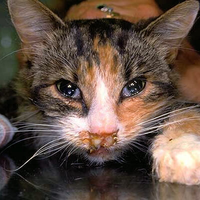

Feline Flu in Cats

What is Feline Flu?
Feline flu is a viral respiratory infection in cats caused by two primary viruses: the feline herpesvirus (FHV) and the feline calicivirus (FCV). These viruses can cause a variety of symptoms, including fever, runny nose, and coughing.
Symptoms of Feline Flu in Cats:
- Frequent sneezing and coughing
- Runny nose and watery eyes
- Loss of appetite
- Fever and lethargy
- Ulcers on the tongue and mouth (in some cases)
Causes:
- Exposure to infected cats or contaminated environments
- Stress, which weakens the immune system
- Close contact with other cats in shelters or multi-cat households
Treatment and Prevention:
Treatment for feline flu usually focuses on managing symptoms, such as using medications to relieve fever or prevent secondary infections. In severe cases, antiviral medications may be prescribed. Prevention includes vaccination, isolating infected cats, and ensuring proper hygiene and sanitation in multi-cat environments.